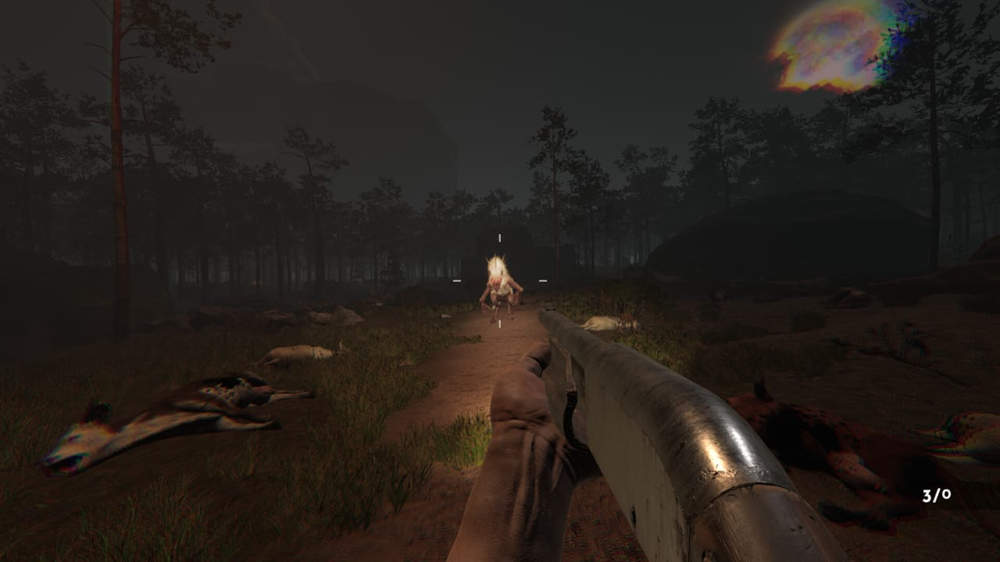

Um jogo brasileiro de tiro sobre a caça ao Chupacabra foi lançado na Steam
Em Chupacabra Hunt, você assume o papel de um caçador do Chupacabra, uma criatura misteriosa que se alimenta do sangue de seres vivos.
Se você nasceu nos anos 2000 em diante, talvez não tenha ouvido falar do Chupacabra. Em meados dos anos 1990 surgiu a lenda do Chupacabra, uma suposta criatura, até então não identificada, que atacava animais (inclusive cabras) em fazendas do interior do Brasil e outros países da América Latina e até mesmo os Estados Unidos, drenando todo seu sangue.
Pois bem, dada esta breve explicação sobre o Chupacabra, o jogo de tiro e terror do estúdio brasileiro FireRing Studio, Chupacabra Hunt, foi lançado no Steam. Ele pode ser adquirido por apenas R$ 12,41 (já com 10% de desconto até o dia 9 de setembro). O jogo possui 21 conquistas.
Em Chupacabra Hunt, os jogadores assumem o papel de um caçador do Chupacabra, uma criatura misteriosa que se alimenta do sangue de seres vivos.
O personagem principal decide se vingar de um monstro vampírico depois que uma noite ele atacou sua fazenda e matou todos os animais.
Além do chupacabra, você pode encontrar animais agressivos no mapa. Espalhados pelo local estão nove tipos de armas, munições, seringas médicas e documentos que revelam a história da misteriosa fera.